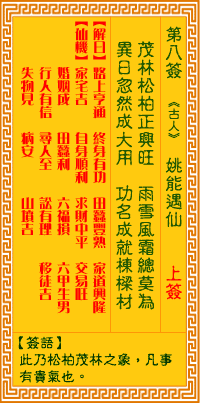

观音灵签第八签 【姚能遇仙】 |
 | |||
岁寒松柏古栽培 雨雪风霜总不摧 异日必当成大用 功名作个栋梁材 |
||||
| 【吉凶】 | 上上签 | 【宫位】 | 丑宫 | |
| 【签语】 | 此卦松柏茂林之象，凡事有贵气也。 | |||
| 【解曰】 | 路上亨通 终身有功 田蚕丰熟 家道兴隆 | |||
| 【仙机】 | 此签家宅吉，自身顺利，求财中平，交易旺，婚姻成，田蚕利，六畜损，六甲生男，行人有信，寻人至，讼有理，移徙吉，失物见，病安，山坟吉。 | |||
| 【详解】 | 犹如岁寒中的松柏，根深稳固，纵使天候恶劣、饱受风霜雨淋，也不会因此而被摧折;相信将来有一天一定可以有很大的用途，成为功成名就的栋梁之材。 平地风光，夙缘有定，丰熟田稻，家获余庆。此签松柏茂叶之象，凡事正直则吉。 本签为松柏之岁寒者。任何之树木枯之后。仍挺具秀者。各面均呈祥。当异日成大材老焉。是大器晚成型。惟不可因此满足。必须因此更加培植。事事积德。方可有更好之明日。要之。象征平地风光夙缘有定。丰熟田稻家获余庆。 此签有”事在人为”之意。鼓励当事人，自强不息。有些人常常虎头蛇尾，短时间的努力不见成效，就打算放弃。然而会成功的人，背后的打拚必定多于常人，辛苦也不足为外人道。范仲淹画粥的故事，最令人感佩的即是他过人的耐力、专注的自制力以及经年累月，从不间断刻苦读书的精神。就如岁寒松柏，在历经雨雪风霜的侵袭后，仍然挺立不摇，坚强地存活下来。因此凡事若定下目标，就应全力以赴。切勿轻言放弃导致功败垂成。只要继续努力、持之以恒，必能先苦后甘，得到丰硕完美的成果。 | |||
| 【典故】 | 可惜“姚能遇仙”的故事已失传，猜多是受仙人（贵人）指点，而终有成就。 | |||